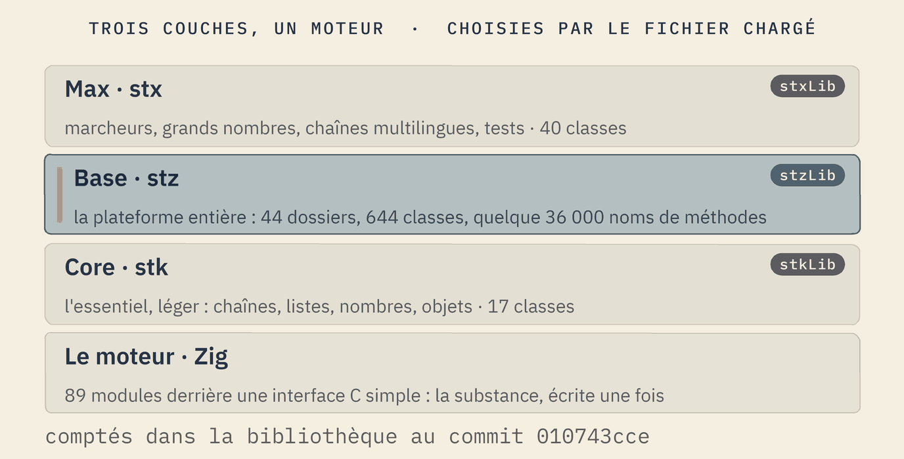
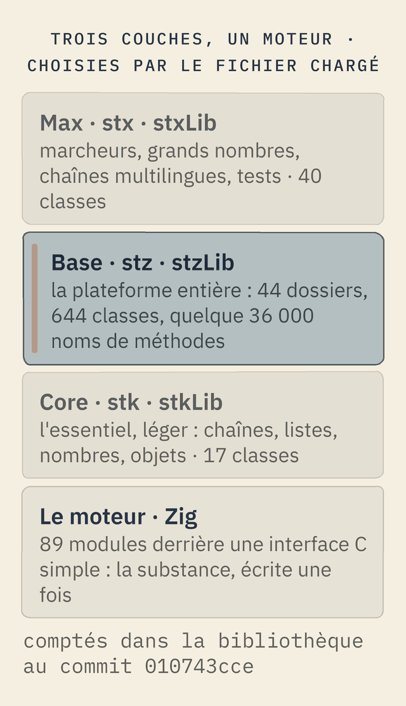

L'architecture
Softanza est faite de trois couches d'un même vocabulaire au-dessus d'un seul moteur. Un programme choisit sa couche par le fichier qu'il charge ; le moteur fait le travail lourd derrière une interface C simple ; et chaque domaine est un dossier, avec un objet qui l'ouvre. Cette page dit ce que contient chaque partie aujourd'hui, et où en est l'exécutable unique.
Trois couches au-dessus d'un moteur
Softanza parle un seul vocabulaire à trois profondeurs. Core contient l'essentiel, léger, pour les programmes qui ont besoin de peu. Base est la plateforme entière, celle que décrit le reste de ce site. Max ajoute des pièces avancées au-dessus de base. Un programme choisit sa profondeur par le fichier qu'il charge ; base charge d'abord core, et max charge base.


Au niveau core, une liste stkList légère répond aux deux recherches de base, la première et la dernière position, en code simple, sans appel au moteur.
o1 = new stkList([ "one", "and", "one", "makes", "two", "ones" ])
? o1.FindFirst("one")
? o1.FindLast("one")1 3
exécuté le 2026-10-02 02:42 dans la bibliothèque au commit 0e72e2e2c ; tiré de core/test/stkListTest.ring(s'ouvre dans un nouvel onglet)
Au niveau base, stzList répond aux mêmes questions avec les mêmes verbes, et ajoute des recherches relatives avec des paramètres nommés.
o1 = new stzList([ "_", "_", "♥", "_", "_", "♥", "_" ])
? o1.FindFirst("♥")
? o1.FindLast("♥")
? o1.FindNext("♥", :StartingAt = 3)
? o1.FindPrevious("♥", :StartingAt = 6)3 6 6 3
exécuté le 2026-10-02 02:42 dans la bibliothèque au commit 0e72e2e2c ; tiré de base/test/list/282_findfirst.ring(s'ouvre dans un nouvel onglet)
La même question reçoit le même verbe aux deux profondeurs ; base connaît simplement plus de façons de la poser.
Quelle couche charger
Les trois couches sont l'unique règle de dépendance de l'architecture, appliquée à la profondeur de capacité et pas à la préoccupation. Une solution se place à la couche qui suffit et pas plus haut, pour n'embarquer que ce qu'elle utilise. Le noyau est pour les petits appareils et les binaires légers : artefacts système et fonctions simples au chargement minimal. La base tient les fonctions de base, avec la gymnastique et les innovations de style de Softanza, assez pour la plupart des besoins. Le max tient les innovations fortes. Une couche est un dossier, un préfixe, un fichier d'entrée et un ensemble de bibliothèques, sans cérémonie d'adaptateurs.
Un appareil, ou un binaire léger
Chargez le noyau. Au commit lu pour cette page, il est cassé : deux de ses classes appellent douze noms du moteur qu'aucun fichier du moteur n'enregistre, et neuf fichiers de test le gardent là où la base en a plus de cinq mille. Signalé à la bibliothèque.
La plupart des solutions
Chargez la base. C'est toute la plateforme, et tout le reste de ce site la décrit.
Marcheurs, grands nombres, chaînes multilingues, cadre de test
Chargez le max, qui est ce que le max contient réellement. Son préfixe est minoritaire : la plupart de ses classes portent encore le préfixe de la base.
La convention est un nom : stkString dans le noyau, stzString dans la base, stxString dans le max. En pratique la base n'hérite pas du noyau. stzString hérite de l'objet racine de la bibliothèque, le noyau porte sa propre hiérarchie parallèle, et les sept domaines qu'ils partagent sont implémentés deux fois au-dessus du même moteur. Un seul vocabulaire à trois profondeurs est vrai des noms et du chargement, et n'est pas vrai de l'héritage.
À la construction, le but est une bibliothèque par domaine du moteur et pas par classe : un client qui n'a besoin que des opérations sur les chaînes ne charge que la bibliothèque des chaînes. C'est le cas dans le moteur aujourd'hui, et pour le web une liste de groupes est fixée à la compilation, de sorte qu'un groupe inutilisé n'est pas du tout dans la compilation ; mesuré sur une solution, le bord complet pèse 12,5 Ko et le kiosque 8,6 Ko. Un chargeur qui amène un domaine de la base sans les autres, et un troisième jeu de bibliothèques pour le max, sont des directions et pas construits.
La manière Softanza Une couche se choisit par le fichier que l'on charge. Un drapeau d'interrupteur a été essayé puis retiré : la directive de chargement tire chaque fichier qu'elle voit quelle que soit la branche, si bien qu'un drapeau qui ne fait silencieusement rien est la partie qui trompe. Un mécanisme qui ne pouvait pas tenir la règle a été remplacé par un qui ne peut pas la rompre, et la raison a été écrite là où le lecteur suivant se tient.
en construction Sous la pression du temps, tout est allé dans la base pendant que le moteur, les plans et les clients avançaient. La base tient 93,2 pour cent des lignes des trois couches et 44 dossiers de domaine là où le contrat en plaçait 23. La méthode du projet, livrer petit et laisser les fondations mûrir sans bloquer une livraison, rend cela défendable exactement tant que la dette est visible ; un dossier pour ce qui n'est pas encore placé, avec un chemin de promotion, est cette méthode en mécanisme. Aucun document ne nomme encore le redécoupage, et les classes qui vont dans le max sont une décision de l'auteur. Les décomptes ont été lus dans les fichiers au commit 93d7a39 de la bibliothèque par une évaluation extérieure le 2026-10-07 ; rien n'a été exécuté.
Le moteur en dessous
Sous les trois couches se trouve un seul moteur, écrit en Zig et compilé en code machine : 89 modules construits à partir de 401 fichiers sources, quatre pour core et 85 pour base. Chaque module a deux portes. L'une est une interface C simple de 752 fonctions, que tout langage capable d'appeler du C peut utiliser. L'autre est le visage qu'appelle la bibliothèque, avec 2 652 fonctions enregistrées pour lui. Au chargement, la bibliothèque ouvre chaque module et choisit le bon fichier pour le système sur lequel elle tourne.
La bibliothèque appelle directement le moteur : ces sommes et produits exacts de grands entiers sont calculés par le module des nombres du moteur, et non par la couche au-dessus.
a = StzEngineBigIntFromString("99999999999999999999999999999999")
? StzEngineBigIntToString( StzEngineBigIntAdd(a, StzEngineBigIntFromString("1")) )
? StzEngineBigIntToString( StzEngineBigIntMul(a, a) )100000000000000000000000000000000 9999999999999999999999999999999800000000000000000000000000000001
exécuté le 2026-10-02 02:42 dans la bibliothèque au commit 0e72e2e2c ; tiré de base/doc/design/SOFTANZA_NUMBER_ENGINE_PLAN.md(s'ouvre dans un nouvel onglet)
La manière Softanza La substance s'écrit une fois, dans le moteur, et les couches au-dessus en sont les visages. Un second visage, ou une seconde machine, atteint les mêmes modules par la même interface C : rien ne s'écrit deux fois et rien ne diverge.
en construction Le moteur est construit et exécuté sous Windows aujourd'hui. Une construction Linux de 85 des 89 modules existe sur une branche de travail ; les quatre qui restent gèrent le HTTP, les événements, les interfaces et les fenêtres.
Un domaine est un dossier
Chaque domaine vit dans son propre dossier, avec un objet qui l'ouvre et un format de données qui lui est propre ; un domaine ne disperse jamais de fonctions globales sans objet derrière elles. C'est la première loi de l'architecture. Base compte aujourd'hui 44 dossiers de ce genre :
agentic · app · appserver · cluster · common · conversation · data · datetime · education · error · extercode · extincode · file · geo · governance · gpu · graph · graphics · gui · i18n · learning · linguistic · list · math · meta · natural · network · neural · number · object · optim · perf · platform · reactive · refine · reflect · regex · security · service · sound · stats · string · system · table
Le chargement suit aujourd'hui les couches : un programme charge core, base ou max, et base apporte tous ses dossiers d'un coup. Un module du moteur peut aussi être ouvert seul, comme le font les gardes du GPU. Un chargeur qui apporte un seul domaine de base, sans les autres, n'est pas encore construit.
Un exécutable, sans dépendance
Ce qui existe aujourd'hui :
- Un constructeur qui traverse les plateformes. Depuis une seule machine Windows, le constructeur utilise Zig pour compiler des programmes pour Windows, Linux et le web, et vérifie chaque fichier qu'il produit par ses premiers octets. Sa garde compte 38 vérifications.
- Un script sans rien à installer. Un programme écrit dans le script de la plateforme devient un exécutable natif dans lequel sa machine virtuelle est compilée : la machine cible n'a aucun environnement à installer. C'est prouvé aujourd'hui sur un programme d'une ligne.
- Seulement ce qui sert, pour le web. Un produit déclare ce dont chacune de ses parties a besoin, et le constructeur n'embarque que les groupes du moteur déclarés : une construction qui ne porte que le solveur est plus petite que la complète.
Déclarez ce dont chaque partie d'un produit a besoin, et Softanza calcule le sous-ensemble du moteur à embarquer : le module du téléphone ne porte que les groupes agrégation et solveur.
oDelivery = new stzDelivery("restolean")
oDelivery.AddSuperApp(:phone, :Android)
oDelivery.AddBackend(:api, :LinuxServer)
oDelivery.AddFirmware(:node, :ESP32)
oDelivery.NeedsIn(:phone, [ :Unicode, :DateTime, :PivotTable, :ConstraintSolver, :Collection, :Neural, :Regex ])
oDelivery.NeedsIn(:api, [ :PivotTable, :Neural ])
oDelivery.NeedsIn(:node, [ :GPIO, :Pattern ])
oPlan = oDelivery.Plan()
? "engine caps: " + @@( oPlan.EngineCapsFor(:phone) )
? "wasm groups: " + @@( StzWasmGroupsFor( oPlan.EngineCapsFor(:phone) ) )engine caps: [ "pivottable", "constraintsolver" ] wasm groups: [ "aggregation", "solver" ]
exécuté le 2026-10-02 02:42 dans la bibliothèque au commit 0e72e2e2c ; tiré de base/doc/narrations/stz-emulating-the-whole-solution-narration.md(s'ouvre dans un nouvel onglet)
Ce qui n'existe pas encore, c'est un programme Softanza complet et son moteur réunis dans un seul fichier sans dépendance, ne contenant que le code que le programme utilise. C'est la direction. La prochaine distribution, encore une expérience, est conçue comme un seul binaire statique, et son exécuteur réunit déjà sa machine virtuelle dans un seul exécutable.
Nombres lus dans la bibliothèque au commit 010743cce : classes déclarées dans les fichiers que charge chaque fichier d'entrée, et noms de méthodes comptés comme des définitions, alias compris. Sources : le fichier d'entrée de base(s'ouvre dans un nouvel onglet), le fichier de construction du moteur(s'ouvre dans un nouvel onglet), le constructeur(s'ouvre dans un nouvel onglet) et sa garde(s'ouvre dans un nouvel onglet).